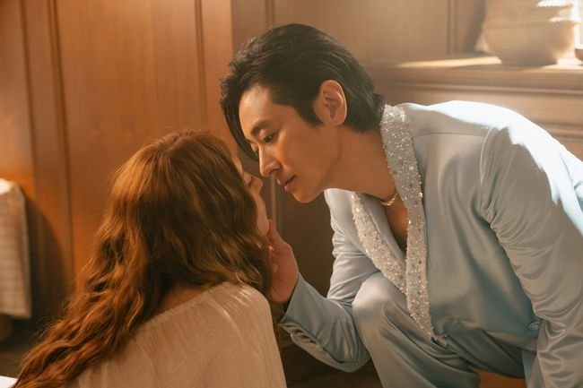
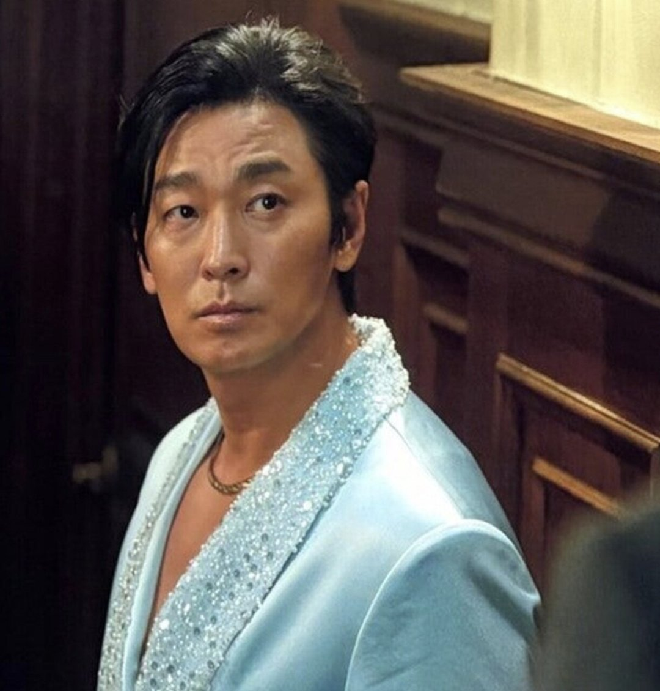
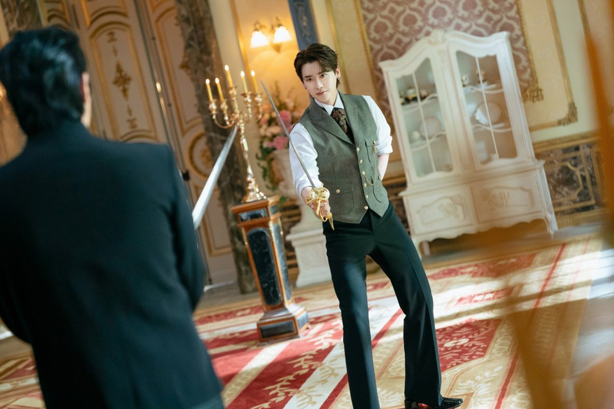

황제의 체통은 명치에서 끝날까, 배꼽까지 내려가도 될까. 디즈니+ '재혼 황후'에서 소비에슈를 맡은 주지훈이 직접 던진 질문이에요. 공개 첫 주 내내 따라붙던 옷 이야기에 배우 본인이 내놓은 답을 정리했어요.
📷 사진 1 자리
▲ 디즈니+ '재혼 황후'의 소비에슈(주지훈) · 사진=디즈니+ 제공
재재의 질문에 바로 나온 "아, 의상들"
12일 유튜브 채널 'MMTG 문명특급'에 신민아, 주지훈, 이종석, 이세영이 함께 나왔어요. 재재가 처음 작품을 접했을 때 '이게 맞나' 싶었던 게 있냐고 묻자 주지훈은 곧바로 의상을 꼽았어요.
📷 사진 2 자리
▲ '재혼 황후'의 라스타(이세영), 하인리(이종석), 나비에(신민아) · 사진=디즈니+ 제공
준비된 옷을 입을 때마다 "이게 과연 가능한 것인가" 싶었고, 이렇게까지 시스루여도 되는지 고민했다고 해요. 가슴이 깊게 파인 데다 비치는 소재가 많은 소비에슈의 옷을 두고 한 말이죠.
▶ 영상 1 자리
집에서는 명치 아래, 공식 자리에서는 명치 위
재미있는 건 그다음이에요. 주지훈은 판타지라도 황제의 체통은 지켜야 한다며 "명치냐 배꼽이냐"를 고민했다고 했어요.
그가 정리한 기준은 이래요. 집에서 입는 가내복은 명치 아래로 내려가고, 공식 석상에서는 명치 위로 올라간다는 것. 배꼽까지 내려가는 옷이 어느 정도의 권위를 뜻하는지도 따져 봤다고 해요.
📷 사진 3 자리
▲ 가슴이 파인 의상을 입은 소비에슈(주지훈) · 사진=디즈니플러스 제공
작품이 공식으로 밝힌 설정은 아니고 배우의 설명이에요. 그래도 남은 회차를 볼 때 하나의 힌트는 돼요. 소비에슈의 옷이 얼마나 파였는지 보면, 그 장면이 황제로서의 자리인지 사적인 시간인지 주지훈의 기준으로 가늠해 볼 수 있어요.
📷 사진 4 자리
▲ '재혼 황후'의 나비에(신민아)와 소비에슈(주지훈) · 사진=디즈니+ 제공
공개 첫 주부터 이어진 옷 이야기
의상 이야기는 이번이 처음이 아니에요. 공개 직후인 5일과 6일에도 주지훈이 파격적인 의상을 걱정했다는 보도가 여러 곳에서 나왔어요. 이번 '문명특급'은 그 걱정을 배우가 직접, 구체적인 기준까지 붙여 풀어낸 자리였던 셈이에요.
📷 사진 5 자리
▲ '재혼 황후'의 라스타(이세영)와 나비에(신민아) · 사진=디즈니+ 제공
같은 영상에서 이종석도 할 말이 있었어요. 하인리 의상 중 등이 드러나는 장면을 두고 '수모'라고 표현했어요. 의상 고민이 황제 한 사람만의 일은 아니었던 거죠.
📷 사진 6 자리
▲ '재혼 황후'에서 칼을 든 하인리(이종석) · 사진=디즈니+ ‘재혼 황후’ 제공
정리해 보니 주지훈은 의상 지적을 피하지 않고 아예 자기만의 규칙으로 바꿔 말했어요. 남은 회차에서는 이 '명치 기준'을 떠올리며 소비에슈의 등장 장면을 비교해 볼 만해요.
주지훈의 답은 '집에서는 명치 아래, 공식 자리에서는 명치 위'였어요. '재혼 황후'는 총 10부작으로 디즈니+에서 매주 수요일 두 편씩 공개되며, 7~8회는 18일, 마지막 9~10회는 25일에 볼 수 있어요.


